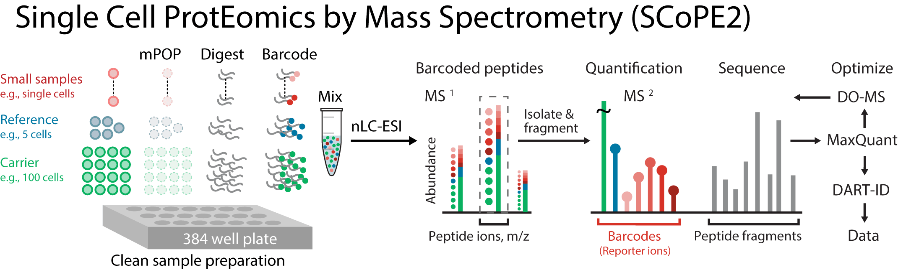

Single Cell Proteomics data analysis with bioconductor-scp
| Author(s) |
|
| Editor(s) |
|
| Reviewers |
|
OverviewQuestions:
Objectives:
Which biological questions can single cell proteomics (SCP) help find us answers to?
Which tools can be used to analyze the SCP data?
Which are the keys steps in the analysis of SCP data?
Requirements:
To learn about the individual steps in the SCP workflow, and which steps to pay attention to.
To learn how to perform quality control checks during the workflow.
To analyze a subset of a real biological dataset.
Time estimation: 3 hoursSupporting Materials:Published: Feb 7, 2025Last modification: Feb 10, 2025License: Tutorial Content is licensed under Creative Commons Attribution 4.0 International License. The GTN Framework is licensed under MITversion Revision: 2
Single-cell proteomics (SCP) is a cutting-edge field that focuses on analyzing the protein composition of individual cells. Unlike bulk proteomics, which measures average protein levels across large cell populations, single-cell proteomics captures the unique protein expression of each cell. This approach reveals cellular heterogeneity, uncovers rare cell subpopulations, and provides deeper insights into complex biological processes, disease progression, and treatment responses. Advances in mass spectrometry and data analysis tools have made it possible to study proteins at single-cell resolution, opening new opportunities for discoveries in biomedicine Lin et al. 2024, Gatto et al. 2023, Ahmad and Budnik 2023.
Due to the complexity and variability of single-cell data, reproducible and standardized analysis pipelines are essential. They ensure consistent, accurate results across studies and help overcome challenges related to data processing, interpretation, and integration. The scp package addresses these needs by providing a robust and well-tested framework for reliable SCP data analysis. It was originally developed in the laboratory of Prof. Laurent Gatto as an R package and this training covers its Galaxy implementation, the bioconductor-scp Galaxy tool.
The scp-bioconductor tool provides the same functionality as the scp R package. However, currently we support only the analysis of MaxQuant output, with the more options to be added in the future. All R functions are packaged into a single tool, meaning that all settings for the whole workflow are pre-defined at the very beginning. We finally opted for this approach due to the usage of complex data structures under the hood, where at the beginning of the workflow the simple text file (MaxQuant output) is converted to a data structure called SingleCellExperiment, which is an S4 object. The SingleCellExperiment object then holds all the data manipulation intermediate steps at various levels of aggregation - you can imagine that as a huge list of all data tables which are produced during the data processing - in one object we store everything from the peptide-to-spectrum match (PSM) level, transformed, imputed peptide level to protein level. In order to avoid multiple export and import from the SingleCellExperiment object to a text file, we therefore start with a text file, do all the data structures manipulation internally, and then output plots and resulting tables in a tabular format.
However, we do realize that it is very important to check also intermediate results and adjust the settings accordingly. We encourage the users not to blindly trust the default settings, but indeed perform quality controls checks, and if needed, change the settings and re-run the tool. It is especially important if there was any batch effect present in the data, which has to be removed or at least considered (which is very common in the SCP analyses). Careful and thorough data exploration at main steps of the workflow is crucial for the correct analysis and interpretation of the data.
Of note, all functions within the bioconductor-scp tool are sorted ‘chronologically’: we start on the PSM level, where first quality control filtering is done. Next, PSMs are aggregated to the peptide level where normalization and transformation are performed. Finally, peptides are aggregated into proteins and on the protein level another round of normalization, as well as imputation of missing values, batch effect correction and dimensionality reduction are performed.
The first layer we end up with after database searches (using tools as MaxQuant or DIA-NN) are peptide-to-spectrum matches (PSMs). These represent the association between a particular mass spectrum and a peptide sequence: how well the measured spectrum matches the theoretical spectrum. A peptide can have multiple PSMs due to the different charge states, fragmentation variations or repeated detection. Aggregation of the individual PSMs brings us to the peptide level. A peptide, in comparison to the PSM, which is a raw spectral evidence, is already identified sequence after some preliminary validation (e.g. False Discovery Rate (FDR) control). Finally, the last layer is the protein level, where multiple peptides (can) match one protein.
The whole tutorial uses only two tools: Group - data by a column and perform aggregate operation on other columns. tool and bioconductor-scp tool tool. It is structured in a way that parameters associated with the particular data processing step are set in the Hands-on section and the background is explained. However, the bioconductor-scp tool will successfully run only after setting all the parameters, so please Run it only after setting of the whole form is completed.
In our tutorial, we will analyze the data included in the scp package, similarly as it’s in the scp vignette. The dataset is a subset of a data included in the publication by Specht et al. Specht et al. 2021 and is publicly available on Zenodo. Data come from the SCoPE2 method (next generation Single Cell ProtEomics, firstly described in the abovementioned publication), where single cells are firstly isolated, lysed and proteins released into the solvent are then enzymatically digested. Individual peptides are then barcoded with the tandem-mass-tags (TMT) and labelled peptides from multiple single cells are combined into a single mixture and analyzed by LC-MS/MS. As a model system, monocytes from human cell line U-937 differentiated into macrophage-like cells in the presence of an agonist of protein kinase C, phorbol-12-myristate-13-acetate (PMA), were used here. The main question was whether the macrophage population will be as homogenous as the monocyte one they originated from or more heterogenous.

Open image in new tabThere are 5 different types of samples in the SCoPE2 data:
- Carrier channel: contains 200 cell equivalents and its main purpose is to boost the peptide identification rate and reduce the sample loss,
- Reference channel: contains 5 cell equivalents and it is used for normalization purposes, to partially correct for the between-run variation,
- Unused channel: is empty due to the isobaric cross-contamination by the carrier channel,
- Blank channel: serves as a negative control, they are processed identically to the single cell channels, but do not contain any cells,
- Single cell channel: contain the single cell samples - in our case Monocytes and Macrophages.
Having now background to both the SCP method and the data example origin, let’s dive into the analysis itself!
AgendaIn this tutorial, we will cover:
Data preparation and filtering
There are two files required on the input:
- Evidence.txt file. Evidence file is one of the outputs from MaxQuant, containing all the information about identified PSMs. In general, we don’t need the whole file, which often contains tens of columns, but only a minimal set is required:
- Modified.sequence: provides the peptide identifiers
- Leading.razor.protein: provides the protein identifiers
- runCol/Raw.file identifier: specifies the MS acquisition runs or files (has to be present also in the second required file, SampleAnnotation)
- PIF: provides spectral purity
- PEP or dart_PEP: provides the peptide posterior error probabilities
- Reporter.intensity columns: contain quantification values. Any other intensity-based quantification columns are allowed.
- Reverse: marks the reverse peptides from the decoy database (labeled with +)
- Potential.contaminant: marks the contaminant peptides (labeled with +)
- sampleAnnotation.txt file. SampleAnnotation file serves as a metadata information about the experiment itself and it’s up to the user to create it. It should contain all important information about e.g. the batch allocation, sample types, etc. Required columns are:
- runCol/Raw.file identifier: specifies the MS acquisition runs or files and corresponds to identically labelled column in the Evidence file.
- quantCols: specifies the quantification data column names (e.g. Reporter.intensity.1)
- SampleType: provides the type of sample that is acquired (carrier, reference, single cell types - e.g. Monocyte, Macrophage, etc.). It is needed only in case of multiplexed experiments.
- If relevant, also batch specification data: batch, sorting day, digestion type, etc.
As mentioned, we will use the subset of the data from Specht et al. 2021. Both example files, evidences.txt and sampleAnnotation.txt, can be imported from Zenodo.
Data upload
Hands On: Upload data
Create a new history for this tutorial and give it a reasonable name.
To create a new history simply click the new-history icon at the top of the history panel:
Import the files from Zenodo and set the data type to tabular:
https://zenodo.org/records/14650887/files/evidences.txt https://zenodo.org/records/14650887/files/sampleAnnotation.txt
- Copy the link location
Click galaxy-upload Upload Data at the top of the tool panel
- Select galaxy-wf-edit Paste/Fetch Data
Paste the link(s) into the text field
Press Start
- Close the window
Set the data type to tabular for both evidence and sampleAnnotation files.
- Click on the galaxy-pencil pencil icon for the dataset to edit its attributes
- In the central panel, click galaxy-chart-select-data Datatypes tab on the top
- In the galaxy-chart-select-data Assign Datatype, select
tabularfrom “New type” dropdown
- Tip: you can start typing the datatype into the field to filter the dropdown menu
- Click the Save button

Dataset exploration
Before we start the analysis itself, let’s quickly explore the dataset we have. The ‘evidences.txt’ has 1362 rows and 150 columns. The ‘sampleAnnotation.txt’ file has 65 rows and 7 columns. We can see that the runCol column from the sampleAnnotation file holds the names of runs in our experiment. If we inspect it more, there are 4 unique values:
190222S_LCA9_X_FP94BM, 190321S_LCA10_X_FP97AG, 190914S_LCB3_X_16plex_Set_21 and 190321S_LCA10_X_FP97_blank_01. In the quantCols column, we can see that there are always 16 reporter intensities for each run. SampleType column contains the sample characterization: there are single-cell channels Macrophage and Monocyte; Blank; Carrier and Unused channels. Finally, there are columns related to the lcbatch, sorting day and digestion.
What might be important to know is how many features (PSMs) we have quantified per run. To have at least a rough estimate, we can use the Group - data by a column and perform aggregate operation on other columns. tool in Galaxy: set the Select data to ‘evidences.txt’ and Group by column to ‘19’, which corresponds to the ‘Raw.file’ column. In the Operation, set then Type to ‘Count’ and On column to ‘Column: 1’. Now we can see that the 190321S_LCA10_X_FP97_blank_01 run has approximately three times less features than other runs, so it might be beneficial to filter it once we perform the analysis itself.
Data loading
Find the bioconductor-scp tool tool. Upload the datasets using the Upload Data button. Select the evidence and sample annotation tables and set the data type as tabular.
Once the datasets are uploaded (green in the right menu), set the Input evidence table to ‘evidences.txt’ and Sample annotations table to ‘sampleAnnotations.txt’. Important is to set the correct run identifier column, in our case Raw.file - this column has to be present in both sampleAnnotation and evidences files and fields have to match.
Remove empty columns setting concerns the columns which contain only missing values. They typically occur if samples acquired with different multiplexing labels are merged into a single table. We suggest to set it to ‘Yes’. QC plots are generated in multiple places in the workflow and help to decide whether to change any current settings or estimate whether a batch effect is present in the data. As they can be very informative, we suggest to set the option to generate them to ‘Yes’.
Hands On: Data loading
- bioconductor-scp ( Galaxy version 1.16.0+galaxy0) with the following parameters
- “Input evidence table”:
evidences.txt- “Sample annotations table”:
sampleAnnotation.txt- “Which column specifies the run identifier and batch name?”:
c19: Raw.file- “Remove empty columns”:
Yes- “Generate QC plots?”:
Yes
Warning: Do not run the bioconductor-scp tool yet!We will learn and set the remaining tool parameters in the next steps of the tutorial. Once we set all the parameters, we will run the tool.
PSMs filtering
At the level of PSMs we will perform the first round of quality control filtering. Firstly, we will remove the contaminant proteins, which are denoted by the Reverse and Potential.contaminant columns. Next we set the threshold for the Parent ion fraction (PIF): PIF indicates the fraction the target peak makes up of the total intensity in the inclusion window, so it is an indicator of the purity of a spectrum.
We will also remove the samples which contain way too little PSMs. From the dataset exploration, we already know that the 190321S_LCA10_X_FP97_blank_01 run has approximately three times less features than other runs - although keep in mind, that these are counts for the unfiltered data, after the contaminants removal there will be actually even less features. Therefore, we would remove this one with some reasonable threshold - in our case, we can use e.g. 150. This means that if a run has less than 150 features, it will be removed.
Additionally, we will compute the sample to carrier ratio (SCR), which is a metric computed as division of the reporter intensity in the single-cell sample by the reporter ion intensity in the carrier channel within the same batch. To compute this, we need to know what are the single cell channels (in our case the Monocyte and Macrophage) and also how many cells were present in the carrier channel (in our case there were 200 cells). We expect, that the carrier intensities will be much higher than the single cell intensities and also we do expect that that ratio between the single cells and the carrier will be 1/200 which is 0.005. After running this workflow, a QC figure titled “QC_plot_SCR” or “QC_plot_SCR_col” will appear within the Plots collection. We can see the histogram of the MeanSCR values and we can see that opposite to the expected ratio 0.005 the peak is around 0.01. There are however few outlier PSMs which have much higher ratios and should be filtered out above 0.1. Therefore we will set the threshold for the filtering to 0.1.
Finally, we will apply the filtering based on the q-values. In the evidences.txt table, there is already a posterior error probability (PEP) calculated. However, PEP is in general considered more stringent than the q-values as PEP measures the direct probability of an error in a single PSM, whereas q-value measures the error across a collection of PSMs, informing us whether the global false discovery rate is acceptable. Therefore, scp package contains the pep2qvalue function, where we just need to specify whether we want to compute the q-values on the PSM, peptide or protein level. We want to be quite stringent, so we will control the FDR at 0.01 meaning we approve that 1% of the PSMs will be identified incorrectly and 99% correctly.
Hands On: Data filtering
- bioconductor-scp ( Galaxy version 1.16.0+galaxy0) with the following parameters
- “Filter reverse sequence”:
True- “Filter potential contaminant”:
True- “Parent ion fraction”:
0.8- “Minimum number of PSMs per assay required”:
150- “Number of cells in the carrier channel”:
200- “Single-cell channels present in the experiment”:
MonocyteandMacrophage- “Mean SCR threshold”:
0.1- “Filter based on PSM, peptide or protein-level q-values”:
protein- “q-value threshold”:
0.01
Comment: SCoPE2 data-specific settingsIf you are analysing the SCoPE2 data, set the
Compute relative reporter ion intensitiesto ‘True’. These are computed in a way that intensities in the single cell channels are divided by the reference channel.
Having the data cleaned, we can now follow with the aggregation of PSMs to the peptide level and peptide-level data processing.
Peptide-level operations
In general, we don’t want to stay on the PSM level, but want to get to the peptide or further to the protein level, where we can follow with the biological analysis. Therefore, in the next step we will aggregate the PSMs to the peptides.
Aggregation to peptides
By default, the aggregation will be done on the Modified.sequence column (found in the evidences table), which contains the peptide sequence along with its possible posttranslational modifications. All PSMs sharing the same modified.sequence will be aggregated by the function we choose - here we will use the colMedians, meaning that the aggregation will be done sample-wise by computing the column medians.
Hands On: Aggregation to the peptide level
- bioconductor-scp ( Galaxy version 1.16.0+galaxy0) with the following parameters
- “Which function to use for the aggregation?”:
Aggregate using the median of each sample: colMedians- “Which column should be used for the PSM to peptide aggregation?”:
c6: Modified.sequence
Peptide filtering
Let’s apply further filtering criteria to remove the low-quality cells. At this point, we can already filter out the Carrier and Reference channels as they won’t be used in any more calculations. We will however keep the single cell channels, Monocyte and Macrophage, and also the Blank which is used for the median coefficient of variation (MedianCV) calculation.
In this tutorial, we will use only filtering for the MedianCV, but it is possible to also filter on the median intensity (where we expect that the Blank sample will contain only background signal and the single channels will be of higher intensity). MedianCV value assesses the consistency of peptide quantification within each protein. Therefore, we would exclude the proteins with high MedianCV. We can set here how many observed peptides per protein are there required for the computation of MedianCV. To decide which threshold to use, we can take advantage of the QC plot which will be produced once the whole workflow ran. We can use the Blank sample where we expect no reliable quantifications to serve as a baseline noise level.
After the filtering, we can remove the blank sample if we haven’t done it already (in case you would omit the filtering for the median intensity or medianCV step).
Hands On: Peptide filtering
- bioconductor-scp ( Galaxy version 1.16.0+galaxy0) with the following parameters
- “Which samples to keep?”:
Monocyte,MacrophageandBlank- “Filter based on median intensity?”:
no- “Filter based on median CV?”:
yes- “How many peptides per protein are required to compute CV?”:
5- “Median CV threshold”:
0.65- “Remove blank sample?”:
yes
Peptide normalization
The next step is normalization, which helps us to remove the technical bias and variation from the samples, but still preserves the biological variation. In contrast to the common untargeted proteomics workflow, in the SCP experiment we perform dual normalization, firstly on columns (meaning samples) and second on rows (meaning features, so peptides). We provide two methods of normalization, either on means or medians, with the preferred options set as default.
Hands On: Peptide normalization
- bioconductor-scp ( Galaxy version 1.16.0+galaxy0) with the following parameters
- “Normalization method columns”:
colMedians- “Normalization method rows”:
rowMeans
Log transformation
Due to the non-normal distribution which is common for the proteomics data, we usually follow with the log transformation and base of 2. There are certain reasons why base 2 is preferred over base 10, as better interpretation of the fold changes (where a log2FC = 1 means a 2-fold increase, log2FC = -1 means 2-fold decrease, and such symmetric interpretation makes it intuitive to compare the upregulation and downregulation), variance stabilization and handling data skewness (log2 transformation helps to reduce skewness and compresses large values while still preserving relative differences). After the transformation, peptide intensities shall follow roughly the normal distribution and will be therefore suitable for a statistical test.
Hands On: Log transformation of intensities
- bioconductor-scp ( Galaxy version 1.16.0+galaxy0) with the following parameters
- “Log transformation base”:
2
High percentage missing values peptides removal
Finally, we want to get rid of the peptides which do have a high missing rate in order to keep only the most reliable identifications. We set the percent of missing values, meaning that peptides exhibiting a higher number of missing values will be removed from the analysis. Here, the pNA is set to 99, meaning peptides containing more than 99% of missing data will be excluded.
Hands On: NA values removal
- bioconductor-scp ( Galaxy version 1.16.0+galaxy0) with the following parameters
- “Remove peptides with high missing rate?”:
yes- ”% of NA values filtering threshold”:
99
This leaves us with a reliable list of peptide identifications. The next step is aggregation to the protein level.
Protein-level operations
Aggregation to proteins
For the aggregation of peptides to the protein level, we will use again the colMedians function, and as a column specifying the protein identifiers, we will use Leading.razor.protein. The peptides which share the same Leading razor protein ID will be aggregated together and based on the function chosen, in our case the colMedians (meaning computation of sample-wise medians).
Hands On: Aggregation to the protein level
- bioconductor-scp ( Galaxy version 1.16.0+galaxy0) with the following parameters
- “Which function to use for the aggregation?”:
Aggregate using the median of each sample: colMedians- “Which column should be used for the peptide to protein aggregation?”:
c17: Leading.razor.protein
Protein normalization
Next, we will also normalize the intensities on the protein level - again firstly in the column-wise manner and then in the row-wise manner. For the columns, we will use the colMedians and for the rows the rowMeans.
Hands On: Protein normalization
- bioconductor-scp ( Galaxy version 1.16.0+galaxy0) with the following parameters
- “Normalization method columns”:
colMedians- “Normalization method rows”:
rowMeans
Missing values imputation
Finally, we have to deal with the missing values as their presence is problematic for some multivariate analyses such as Principal Component Analysis (PCA) and leads to reduced statistical power as incomplete data limits the ability to detect significant differences between experimental groups. The most common way how to approach them is by the process called missing values imputation. By the imputation, we can replace the missing values with the artificial counterparts. Missing values can be of two major types: missing completely at random (MCAR) and missing not at random (MNAR) and they should be treated separately. In the SCP data, the MCAR type is more prevalent, and for MCAR data k-Nearest Neighbors (kNN) approach is often employed. The kNN approach will replace the missing values based on the weighted average of k-most similar proteins - it assumes that the missingness is due to a stochastic factor (e.g. instrumentation problem, but the protein is actually present). For the kNN, we have to choose the number of k-nearest neighbors beforehand, which we can set to 3.
Hands On: Missing values imputation
- bioconductor-scp ( Galaxy version 1.16.0+galaxy0) with the following parameters
- “Which k to use for the kNN imputation”:
3
kNN stands for the k-Nearest Neighbors, which is a supervised machine learning method often used as a classification tool. It is a non-parametric algorithm meaning that is has no underlying assumptions about the data distribution. In proteomics, it is very often used to impute the missing completely at random (MCAR) data, which are of a stochastic nature and missing values occur across whole range of intensities and are not biased towards the low-intensity peptides/proteins. The first step is to compute the similarity between the protein with the missing values and all other proteins without missing values - common similarity (=distance) measures include Euclidean distance, Pearson, Manhattan or Minkowski. Then the k most similar proteins based on the distance metric are selected - usually it is recommended to use odd numbers as k. Finally, missing values are replaced by weighted average of the corresponding values from the k-nearest neighbors. The choice of k is crucial for correct handling of the missing values in our data, however there is no easy way how to choose the ‘best’ k. Generally accepted is to set the k as the square root of the number of samples in the dataset.
After the imputation, we end up with a full numeric matrix without any missing values. The next step is to check for the batch effect as it is unfortunately very common for the SCP experiments.
Batch effect correction
Batch effects are unavoidable in SCP experiments as only a few multiplexed single cells can be acquired at once. However, having an untreated batch effect could compromise statistical analysis and lead to incorrect biological interpretation. There are two main approaches how to deal with it: either we can include the batch as a covariate in a statistical model and model it, or we can estimate it and remove it using tools as ComBat.
In the bioconductor-scp, there are two batch removal methods implemented: already mentioned ComBat from the sva R package and removeBatchEffect method from limma R package. In principle, both methods perform well for the SCP data: ComBat is preferred if the sample size is small (<10) Goh et al. 2017, whereas removeBatchEffect is preferred for large sample sizes, but in general it is up to the users preferences or previous experience which method they will choose. A good strategy would be also to run both methods and then check the PCA and Uniform Manifold Approximation and Projection for Dimension Reduction (UMAP) plots or inspect the batch corrected data. In this tutorial, we will use ComBat. The only thing we need to select is the batch variable to be corrected (e.g. day when the samples were run, sorting day, digestion, … - in general column in the sampleAnnotation table) - here we will use the RunCol.
Hands On: Batch effect correction
- bioconductor-scp ( Galaxy version 1.16.0+galaxy0) with the following parameters
- “Which batch correction method to use?”:
ComBat- “Which column is the technical variable to be corrected?”:
c2: runCol
ComBat method (Combatting batch effects when combining batches of microarray data) was originally developed for the microarray data, but quickly found an application also in the proteomics domain. It uses an empirical Bayes method to adjust for the systematic known batch effects. It removes the batch effects which impact both means and variances of each gene within a processing batch. ComBat performs well also for the imbalanced data, however, it requires a full data matrix on the input - meaning a strict pre-filtering or imputation of missing values is required prior running it. Also, importantly, to run ComBat we need to know the batch covariate - i.e. which variable is responsible for the batch effect. The output is then a batch-corrected data matrix. Phua et al. 2022, Zhang et al. 2018
Dimensionality reduction
The next step is the dimensionality reduction. We will firstly use the PCA to reduce the dimensions, followed by the UMAP. Because PCA cannot deal with the missing values, we will use the imputed and batch-corrected data. We will select the number of components to obtain [is there any optimal number to choose?] and we can also choose according to which variable the PCA plot will be colored by. Usually, we expect that the first few components will account for the most of the variability (the long accepted approach was to choose the number of components retained would be equal to the number of variables being analyzed O’Brien).
Hands On: Batch effect correction: PCA
- bioconductor-scp ( Galaxy version 1.16.0+galaxy0) with the following parameters
- “Run principal component analysis (PCA)?”:
yes- “Number of components”:
5- “What column to color the PCA according to?”:
c4: SampleType
In contrast to PCA, which is a linear dimension reduction, UMAP is a non-linear approach. Similarly to the PCA, we need to select the number of components to retain.
Hands On: Batch effect correction: UMAP
- bioconductor-scp ( Galaxy version 1.16.0+galaxy0) with the following parameters
- “Run UMAP on PCA data?”:
yes- “Number of components”:
2
Dimensionality reduction (DR) is an important step in the analysis of high dimensional proteomics datasets, where thousands of features (proteins; corresponding to variables) are measured across usually fewer samples. The main purpose is to reduce the noise and identify the most informative features or patterns in our data - to reduce the number of dimensions while retaining most of the useful information. There are several methods, which can be used: here, we will provide a brief overview of the most used ones, PCA, UMAP and tSNE.
PCA (Principal Component Analysis) is a linear method of DR. It creates linear combinations of the original variables and projects the data onto ortoghonal axes (principal components), which are ordered by the variance explained (PC1 explaining the most variance, PC2 next highest, etc.). It very well maintains the global structure of the data. Importantly, data has to be standardized prior running the PCA, meaning that mean is zero and variance is 1 within all variables Proteomics.
tSNE (t-Distributed Stochastic Neighbor Embedding) is an unsupervised non-linear technique modeling the similarity of the data points in high-dimensional space as probabilities to match these in low-dimensional space. The non-linearity in this context means that it allows us to separate also data which couldn’t be separated by a straight line. The more similar objects will be closer together, while the more dissimilar objects will be more separated. In contrast to PCA, it preservers very well the local structure, but is not so good in preserving the global structure, meaning the distances between clusters might not be meaningful. Also, tSNE is very sensitive to parameters tuning, especially perplexity, basically setting how many close neighbors each point has within one cluster. Distill
UMAP (Uniform Manifold Approximation and Projection) is similarly to tSNE a non-linear DR method, which constructs a high-dimensional graph and optimizes its low-dimensional representation. It can preserve very well both the global and local structure, meaning that if the two clusters are far apart in the original space, UMAP will try to maintain the distance also in the low-dimensional space - however, the distance is still not directly interpretable such as in case of PCA. Compared to tSNE, it also shows a much better performance, however, the careful fine-tuning of parameters is still crucial in order to correctly interpret the results. ERROR INVALID CITATION > understanding-umap, Varma
Data export
In the end of the workflow, several datasets are exported. By default, a log transformed, normalized, imputed and batch-corrected data on the protein level are provided. Additionally, it is possible to export also intermediate results, meaning peptides, normalized peptides, log transformed peptides, proteins, normalized proteins and imputed proteins. Also, it is possible to export the scp object as an Rdata object, which can be further loaded into the R environment using the R load() function, and the Rscript to reproduce the analysis outside of Galaxy. Both plots and intermediate results will be provided as collections.
In our tutorial, we will get all the QC plots (because we set the Generate QC plots? to Yes). Let’s a bit describe what we can find in the Plots collection:
- PCA: PCA plots a scatterplot where PC1 is displayed on the x-axis and PC2 on they y-axis. We can see how much variance is explained by these two principal components and whether there are any clusters of e.g. samples based on how similar they are.
- QC_boxplot_peptide: Boxplots of the (non-normalized) log2 transformed peptide intensities for the individual
Runscolored based on theSampleType. - QC_boxplot_peptide_norm: Boxplots of the normalized and log2 transformed peptide intensities for the individual
Runscolored based on theSampleType. - QC_boxplot_protein: Boxplots of the (non-normalized) log2 transformed protein intensities for the individual
Runscolored based on theSampleType. - QC_boxplot_protein_norm: Boxplots of the normalized and log2 transformed protein intensities for the individual
Runscolored based on theSampleType. - QC_heatmap_proteins: Heatmap of missing values on the protein level (intensities after protein normalization were used). Columns are
Runs, rows are individual proteins. Black means that protein has non-zero intensity, white means the protein has NA value for in the particular run. This can be useful to estimate what type of missingness is prevalent in our data (if the protein is missing in a stochastic manner across conditions, it will likely be MCAR; if protein absence/presence is biased towards specific samples group, it will likely be MNAR). - QC_median_CV: Boxplots of the median coefficient of variation (CV) in the single cell samples and blank. We want to assess the consistency of quantification and filter out the cells with unreliable quantifications. In our example scenario, based on the distribution in Macrophage and Monocyte samples, we would set the threshold to 0.65.
- QC_plot_SCR: This plot shows the histogram of the mean sample-to-carrier ratio (SCR), which is computed as reporter ion intensity of a single cell channel divided by the reporter ion intensity of the carrier channel within one batch. We expect that the carrier intensity will be much higher than the single cell intensity. Because we have 200 cells in the carrier channel, we expect the ratio to be 1/200 (=0.005, the dashed line). We want to filter the PSMs which have a very high meanSCR, so in our case we would set the threshold to 0.1, where the long tail begins.
- QC_plot_SCR_col: the density plot of meanSCR as described above.
- UMAP: UMAP plot based on the PCA data.
In our tutorial, we didn’t generate the intermediate outputs. These are the dataframes containing the rowData (Gene.names, Leading.razor.protein, …) along with the particular numerical matrix - i.e. reporter intensities aggregated to the peptide or protein level, after transformation/normalization.
Summary tool setting
Let’s once again recapitulate how did we set the form: below we will mention only the parameters where we adjusted values, the other parameters were left to the default settings. Now we can finally run the tool!
Hands On: bioconductor-scp: Full example
- bioconductor-scp ( Galaxy version 1.16.0+galaxy0) with the following parameters
- “Input evidence table”:
evidences.txt- “Sample annotations table”:
sampleAnnotation.txt- “Which column specifies the run identifier and batch name?”:
c19: Raw.file- “Single-cell channels present in the experiment”:
MonocyteandMacrophage- “Which column should be used for the PSM to peptide aggregation?”:
c6: Modified.sequence- “Which samples to keep?”:
Monocyte,MacrophageandBlank- “Which column should be used for the peptide to protein aggregation?”:
c17: Leading.razor.protein- “Which column is the technical variable to be corrected?”:
c2: runCol- “What column to color the PCA according to?”:
c4: SampleType
That’s it! Good luck with the analysis of your own single-cell proteomics data!